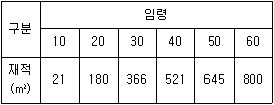

산림산업기사 (2010-05-09 기출문제)
1과목: 조림학
1. 단목택벌 작업법의 적용시 천연하종에 적합한 수종은 다음 중 어느 것을 들 수 있나?
- 양수 수종
- 음수 수종
- 건전한 성장목
- 풍치상 가치가 높은 수종
(정답률: 66%)

2. 생립목의 가지를 땅에 묻고, 흙을 덮어 발근시켜서 그 후 발근한 것을 절단하여 개체증식을 하는 방법은?
- 취목법
- 분얼법
- 유대법
- 분근법
(정답률: 71%)
3. 소나무 느티나무 종자를 채취할 때 성숙종자와 미성숙종자를 구별하려면 무엇으로 하는가?
- 수량
- 무게
- 실중
- 색깔
(정답률: 44%)
4. 1.8m간격으로 정방형 식재를 할 때 1ha의 면적에 약 몇주의 묘목이 소요되는가? (단, 평지일 경우이다.)
- 2506주
- 3086주
- 4186주
- 5016주
(정답률: 82%)
5. 침엽수종은 수목의 뿌리에서 흡수된 수분이동을 주로 줄기의 어느 부분을 지나서 잎으로 전달되는가?
- 수
- 사부
- 형성층
- 목부가도관
(정답률: 83%)
6. 다음 중 비콩과수목으로서 질소고정균과 공생하는 비료목인 수종은?
- 족제비싸리
- 오리나무
- 아까시나무
- 굴참나무
(정답률: 75%)
7. 다음 종자 중 결실 주기가 2~3년인 것은?
- 참나무류
- 오동나무
- 버드나무류
- 잎갈나무
(정답률: 50%)
8. 묘목에서 T/R률이란?
- 근부와 지상부와의 건중량을 말한다.
- 근부와 지상부와의 용량비를 말한다.
- 근장과 묘고와의 비를 말한다.
- 근부와 지상부와의 실중비를 말한다.
(정답률: 55%)
9. 비료목에 대한 설명 중에서 옳지 못한 것은?
- 임지의 지력증강에 도움을 준다.
- 질소함량이 많은 근류의 분해에 의한 환원이 있다.
- 공기 중의 질소를 스스로의 양료로 이용하기 때문에 척박한 토양에서도 자람이 좋다.
- 비료목이란 비옥한 토양에 심어 주는 주목적인 임목을 말한다.
(정답률: 75%)
10. 모수의 조건을 열거한 것이다. 잘못된 것은?
- 유전적 형질이 좋아야 한다.
- 사시나무류는 암나무만 남겨야 한다.
- 선척적 불량 형질의 나무는 모수로 하지 않는다.
- 수고가 높은 임분의 모수는 풍도에 애하여 저항력이 있어야 한다.
(정답률: 88%)
11. 다음 중 종자 정선 방법이 아닌 것은?
- 입선법
- 사선법
- 식염수선법
- 건조법
(정답률: 56%)
12. 상수리나무와 매우 닮은 나무로 상수리나무보다 더 높은 산허리지대에 잘 나타나며 이복을 제외한 전국적 분포를 보인다. 잎 뒤의 회백색 성상모가 밀생해 있는 이 나무는 무엇인가?
- 신갈나무
- 갈참나무
- 떡갈나무
- 굴참나무
(정답률: 45%)
13. 산림이 발휘하는 공익적 기능이 아닌 것은?
- 홍수나 산사태를 방지한다.
- 이산화탄소를 흡수하고 산소를 방출한다.
- 파티클 보드의 원료로 이용된다.
- 휴양의 기회를 제공한다.
(정답률: 89%)
14. 2개의 상이한 생태계가 만나는 지점으로 종 구성이 풍부한 지역은?
- 점이 지대
- 추이대
- 고류 지대
- 한계선
(정답률: 61%)
15. 다음 소나무류 중에서 한 곳에 잎이 5개씩 나있는 것(5엽송)은?
- 해송
- 잣나무
- 소나무
- 리기다소나무
(정답률: 67%)
16. 묘목의 단근 작업의 설명으로 맞지 않는 것은?
- 단근 작업은 묘목의 철늦은 자람을 억제한다.
- 측근과 세근의 발달을 촉진시킨다.
- 묘목을 포지에 세워두고 도구를 이용해서 절단한다.
- 단근 작업을 통해서 건전한 묘목을 생산할 수는 있어도 산지에 식재하는 경우 활착률은 떨어진다.
(정답률: 75%)
17. 일제 동령림의 간벌작업에서 밀도만을 다르게 할 때 나타나는 현상이 아닌 것은?
- 지하고는 고밀도일수록 높다.
- 고밀도일수록 연륜폭은 좁아진다.
- 단목의 평균 간재적은 고밀도일수록 커진다.
- 상층목의 평균 수고는 임목의 밀도와 상관없이 거의 비슷하다.
(정답률: 63%)
18. 우량 묘목의 조건이 아닌 것은?
- 건조된 흔적이 보이는 것
- T/R 값이 3.0보다 적은 것
- 발육이 왕성하고 조직이 충실한 것
- 가지와 잎이 균재하고 줄기가 굵은 것
(정답률: 83%)
19. 삼림작업종의 분류 기준이 아닌 것은?
- 임령
- 벌채종
- 임분의 기원
- 벌구의 크기와 형태
(정답률: 43%)
20. 다음 풀베기 방법 가운데 모두베기에 대한 설명으로 맞는 것은?
- 한풍해가 예상되는 곳에서 실시한다.
- 조림목이 음수 수종에 적용하면 좋다.
- 조림목에 광선을 제대로 주지 못하는 단점이 있다.
- 조림목을 남겨두고 그 지역의 모든 잡초목을 제거 하는 방법이다.
(정답률: 88%)
2과목: 산림보호학
21. 수목의 뿌리혹병의 방제 방법으로 가장 거리가 먼 것은?
- 윤작
- 건전한 묘목식재
- 석회 사용량의 증가
- 병든 묘목 발견 즉시 제거
(정답률: 65%)
22. 미국흰불나방의 월동 충태는?
- 알
- 유충
- 번데기
- 성충
(정답률: 80%)
23. 소나무좀에 대한 설명이 아닌 것은?
- 성충으로 월동한다.
- 부화유충은 모갱과 직각으로 유충갱을 만든다.
- 15℃ 이상에서 활동하고 구멍을 뚫고 갱도를 만들고 알을 낳는다.
- 10~11월에 노숙유충은 목질섬유로 둘러싸고 그 속에서 번데기가 된다.
(정답률: 60%)
24. 솔잎혹파리에 관한 설명으로 옳지 않은 것은?
- 1년에 2회 발생한다.
- 5~6월경에 우화한다.
- 충영 형성 해충이다.
- 유충은 땅속 2~5cm에서 월동한다.
(정답률: 79%)
25. 해충 가운데 침엽수와 활엽수를 모두 가해하는 것은?
- 솔나방
- 집시나방
- 텐트나방
- 미국흰불나방
(정답률: 57%)
26. 병든 가지나 줄기는 처음에 황색이나 오렌지색으로 변하면서 약간 부풀고 거칠어지며 4~6월 사이에 병환부의 수피가 터지면서 오렌지색의 가루주머니가 터져 노란가루가 비산되는 것은?
- 소나무 혹병
- 사과나무 불마름병
- 잣나무 털녹병
- 붉나무 빗자루병
(정답률: 60%)
27. 다음의 산림 해충 중에서 가장 잡식성인 해충은?
- 솔나방
- 텐트나방
- 미국흰불나방
- 오리나무잎벌레
(정답률: 54%)
28. 다음 중 산림해충의 생물학적 방제방법이 아닌 것은?
- 유인목을 이용한 방제
- 기생곤충을 이용한 방제
- 포충동물을 이용한 방제
- 병원미생물을 이용한 방제
(정답률: 69%)
29. 다음 중 식엽성 해충에 속하는 것은?(오류 신고가 접수된 문제입니다. 반드시 정답과 해설을 확인하시기 바랍니다.)
- 밤바구미
- 집시나방
- 솔악락명나방
- 오리나무잎벌레
(정답률: 26%)
30. 뽕나무 오갈병의 병원체는?
- 세균
- 진균
- 바이러스
- 파이토플라스마
(정답률: 77%)
31. 공중의 관계습도가 30% 이하일 때 산불발생 위험도 와의 관계는?
- 잘 발생하지 않는다.
- 발생하지만 진행이 더디다.
- 발생하기가 쉽고 또 빨리 연소된다.
- 대단히 발생하기 쉽고 소방이 곤란하다.
(정답률: 69%)
32. 토양 중에서 월동하는 병원균은?
- 잣나무 털녹병균
- 밤나무 줄기마름병균
- 파이토플라스마 빗자루병균
- 묘목의 잘록병균(모잘록병균)
(정답률: 85%)
33. 다음 중 뿌리혹병(crown gall)이 가장 잘 발생하는 수종은?
- 밤나무
- 대추나무
- 오동나무
- 은행나무
(정답률: 65%)
34. 곤충의 입틀은 먹이에 따라서 여러 가지 모양을 하게 되는데 찔러 빨아먹는 입틀을 가진 곤충은?
- 메뚜기
- 흰개미
- 노린재
- 딱정벌레
(정답률: 73%)
35. 산불이 토양에 미치는 피해가 아닌 것은?
- 토양이 척박해진다.
- 토양의 이화학적 성질을 악화시킨다.
- 낙엽이 탄 결과로 토양의 투수성이 감소된다.
- 토양에 직접 물이 스며들 수 있어 지표유하수가 감소한다.
(정답률: 70%)
36. 포스파미돈 액제(50%)의 수간주입으로 방제효과를 얻을수 있는 해충은?
- 솔노랑잎벌
- 집시나방
- 솔잎혹파리
- 버들재주나방
(정답률: 73%)
37. 표징에 의한 진단으로 수목의 병을 육안으로 관찰할 수 있는 것은?
- 잎의 변색
- 포자
- 분비
- 잎 또는 가지의 총생
(정답률: 59%)
38. 일반적인 수목의 병원미생물 중 균류의 생활사에 대한 설명으로 틀린 것은?
- 균류의 대부분은 한 종의 식물에서 생활사를 완성 하는데 그렇지 않은 종도 있다.
- 생활사를 완성하기 위하여 기주를 바꾸는 현상을 기주교대라 한다.
- 기주교대를 하는 이종기생균의 대표적인 예는 녹병균이다.
- 2종의 기주식물 중에서 경제성이 높거나 피해가 심한쪽을 중간기주라 한다.
(정답률: 65%)
39. 대추나무 빗자루병에 대한 설명으로 틀린 것은?
- 매개충은 마름무늬매미충이다.
- 꽃봉오리가 잎으로 변하는 엽화현상이 발생한다.
- 대추나무 빗자루병은 바이러스에 의한 수병이다.
- 대추나무 빗자루병은 병든 나무의 분주를 통해 전염될수 있다.
(정답률: 74%)
40. 아황산가스 피해에 영향을 끼치는 요인이 아닌 것은?
- 광도
- 온도
- 상대습도
- 식물의 내한성
(정답률: 76%)
3과목: 임업경영학
41. 사유림의 경영형태를 소유규모에 의하여 분류할 때 5h미만으로 연료, 퇴비원료, 사료 등을 얻기 위해 산림을 소유하거나 조상의 묘를 모시기 위하여 산림을 보유하고 있는 임업의 형태는?
- 농가임업
- 겸업적 임업
- 부업적 임업
- 주업적 임업
(정답률: 66%)
42. 일반적으로 유령임목의 평가방법으로 적합한 것은?
- 매매가법
- 임목비용가법
- 기망가법
- 글라제르병
(정답률: 75%)
43. 다음 중 입목의 재적측정 요소로만 짝지어진 것은?
- 원주, 수고, 형수
- 수고, 직경, 형수
- 단면적, 직경, 형수
- 원주, 단면적, 직경
(정답률: 66%)
44. 산림수확의 보속성이 공공경제적 입장에서의 필요성이 아닌 것은?
- 사회정책상
- 산업보호상
- 산물의 판매상
- 목재수요의 공급상
(정답률: 46%)
45. 말구직격(dn) 26㎝, 중앙직경 30㎝, 원구직경(do) 36㎝ 그리고 재장(ℓ)이 4인m 통나무의 재적을 Huber식에 의하여 계산하면?
- 0.283m3
- 0.613m3
- 0.832m3
- 0.945m3
(정답률: 56%)
46. 다음 중 고정자본재가 아닌 것은?
- 종자
- 임도
- 제재설비
- 벌채된 임목
(정답률: 63%)
47. 다음 중 임분을 구성하고 있는 수종을 조사하여 침엽수림·활엽수림 또는 침활혼효림으로 임분의 구성상태를 나눈 것은?
- 임상
- 임종
- 임지
- 임령
(정답률: 54%)
48. 임지기망가가 최대치에 도달하는 시기에 관한 설명으로 맞는 것은?
- 관리비가 적을수록
- 간벌수익이 적을수록
- 간벌수확의 시기가 늦을수록
- 주벌수확의 증가속도가 빠를수록
(정답률: 50%)
49. 흉고형수(breast height form factor, 흉고계수)에 영향을 미치는 인자가 아닌 것은?
- 수고
- 지위
- 벌기령
- 수종과 품종
(정답률: 59%)
50. 개별원가계산 방법의 설명으로 옳지 못한 것은?
- 공정별 원가계산방법이라고도 한다.
- 주고 주문에 의하여 제품을 생산하는 경우에 많이 사용한다.
- 제품의 원가를 개개의 제품단위별로 직접 계산 하는 방법이다.
- 소비자에게 제품의 원가와 일정한 이익을 합계한 제품가격을 청구하는 데 도움이 된다.
(정답률: 74%)
51. 산림의 경사도를 나타낼 경우 절험지를 판단하는 기준으로 가장 적당한 것은?
- 25° 이상
- 30° 이상
- 35° 이상
- 40° 이상
(정답률: 62%)
52. 취득원가가 40만원이고, 폐기할 때의 잔존가치가 10만원으로 추정되어지는 기계톱이 있다. 이 톱의 총 사용가능 시간을 6만 시간이라 할 때 시간당 감가상각률을 작업 시간비례법에 의하여 계산하면 얼마인가?
- 4 원
- 5 원
- 6 원
- 7 원
(정답률: 73%)
53. 다음과 같은 수확표가 주어질 때 법정축적을 수확표에 의한 방법으로 계산했을 때 맞는 것은? (단, 산림면적은 100㏊ 이고 윤벌기는 60 년이다.)

- 14100m3
- 28210m3
- 33550m3
- 40000m3
(정답률: 36%)
54. 임업경영에서 지위란 무엇을 뜻하는가?
- 임목의 직경과 수고
- 임목이 서있는 위치
- 임지의 임목생산 능력
- 임지의 높이로서 해발고의 같음
(정답률: 56%)
55. 원가관리의 목적과 재고자산의 평가 등의 용도로 시작된 원가는 무엇인가?
- 변동원가
- 고정원가
- 기회원가
- 표준원가
(정답률: 50%)
56. 산림평가에 사용되는 임업이율의 성격과 거리가 먼 것은?
- 임업이율은 대부이자가 아니고 자본이자이다.
- 임업이율은 현실이율이 아니고 평정이율이다.
- 임업이율은 단기이율이 아니고 장기이율이다.
- 임업이율은 명목적 이율이 아니고 실질적 이율이다.
(정답률: 70%)
57. 수간석해의 방법으로 총재적을 얻을 때 고려하지 않아도 되는 것은?
- 근주재적
- 지조재적
- 결정간재적
- 초단부재적
(정답률: 47%)
58. 일반적으로 매목조사에서는 주로 무엇을 측정하는가?
- 부피
- 수고
- 흉고직경
- 입목도
(정답률: 57%)
59. 화폐가치의 하락으로 인하려 임목가격이 상승을 의미하는 것은?
- 가격생장
- 등귀생장
- 재적생장
- 형질생장
(정답률: 66%)
60. 임가소득 중에서 임업소득이 차지하는 비율은 무엇인가?
- 임업의존도
- 임업소득률
- 임업조수익
- 임업소득가계충족률
(정답률: 53%)
4과목: 산림공학
61. 가공본줄을 이용한 가선집재방식의 종류와 특징을 기술한것 중 옳지 못한 것은?
- 타일러식 집재방법은 가로집재가 가능하며 룰러 및 와이어로프의 마모가 심하지 않다.
- 엔드리스 타일러식 집재방법은 긴 가로집재가 가능하며 설치시간이 많이 소요된다.
- 스너빙식 집재방법은 구조가 간단하여 운전이 용이하나 가로집재가 불가능하다.
- 슬랙라인식 집재방법은 구조가 간단하여 설치가 용이하나 임지훼손이 크다.
(정답률: 42%)
62. 설계속도 40km/h, 노면의 외쪽물매 6%인 일반지형의 구조로 임도곡선부를 설치하고자 한다면 곡선반지름은 몇 m가 적당한가? (단, 가로미끄럼에 대한 노면과 타이어 마찰계수 (f)는 0.15이다.)
- 50m
- 60m
- 70m
- 80m
(정답률: 71%)
63. 임업용 트랙터의 기계경비 계산 중 아래의 조건에 대한 수리유지비(RM)를 계산하면? (단, 기계구입비 : 8천만원, 장비의 경제적수명 : 20000시간, 수리정비계수 : 0.8이다.)
- 2100원/시간
- 2800원/시간
- 3200원/시간
- 4300원/시간
(정답률: 65%)
64. 흙속에서 공기와 물이 차지하고 있는 부분을 무엇 이라고 하는가?
- 비중
- 공극
- 수압
- 밀도
(정답률: 75%)
65. 퇴사울타리의 높이는 몇 m정도가 적당한가?
- 1m
- 2m
- 3m
- 4m
(정답률: 55%)
66. 산림관리기반시설의 설계 및 시설기준에 따라 임도 시공을 할 때 경암지역(암석지)의 절토 경사면 기울기는 얼마로 설정하는가?
- 1:0.2~0.3
- 1:0.3~0.8
- 1:0.8~1
- 1:0.8~1.2
(정답률: 58%)
67. 임도의 유지관리에 사용되는 기계와 거리가 먼 것은?
- 모터그레이더
- 백호우
- 스테빌라이저
- 불도저
(정답률: 68%)
68. 인건비 계산에서 다음 중 간접임금에 속하지 않는 것은?
- 연금
- 재해보험
- 가족수당
- 시간급
(정답률: 65%)
69. 비탈파종공법에서 한 종의 발생기대본수는 모든 발생 기대본수의 몇 %이하가 되지 않도록 파종량을 산출하는가?
- 10%
- 20%
- 30%
- 40%
(정답률: 32%)
70. 시멘트의 수화작용시 발열량이 가장 적은 시멘트는?
- 보통포틀랜드시멘트
- 조강포틀랜드시멘트
- 중용열포틀랜드시멘트
- 알루미나시멘트
(정답률: 42%)
71. 임도시공시 기초공사를 위한 터파기를 할 때 보통 터파기 기초면적 이외의 주위공간 여유는 얼마 정도가 좋은가?
- 30㎝ 정도
- 60㎝ 정도
- 90㎝ 정도
- 120㎝ 정도
(정답률: 47%)
72. 산림관련 규칙상 임도의 횡단기울기의 표준 중에서 포장을 하지 아니한 노면의 횡단 기울기(%)는 얼마인가?
- 1~2%
- 3~5%
- 5~6%
- 7~8%
(정답률: 66%)
73. 시멘트의 절약을 목적으로 하는 감수제로서 콘크리트의 수밀성, 내구성, 강도 등을 높이는 작용을 하는 것은?
- AE제
- 시멘트분산제
- 응결경화촉진제
- 포졸란
(정답률: 42%)
74. 임도의 횡단배수구 설치장소로서 적당하지 않은 것은?
- 구조물의 옆에 설치한다.
- 유하방향의 종단물매 번이점에 설치한다.
- 외쪽물매 때문에 옆도랑물이 역류하는 곳에 설치한다.
- 흙이 부족하여 속도랑으로서는 부적당한 곳에 설치한다.
(정답률: 37%)
75. 평균 유속이 2m/s, 유적이 12m3 일 때 유량은?
- 6m3/s
- 12m3/s
- 24m3/s
- 48m3/s
(정답률: 77%)
76. 벌목과 운재계획을 위한 예비조사에 해당하지 않는 것은?
- 벌목구역조사
- 반출방법조사
- 임황 및 지황조사
- 기존 실행결과조사
(정답률: 66%)
77. 프로세서(processor)의 구성 요소가 아닌 것은?
- 송재장치
- 절단장치
- 조재목 마름질장치
- 벌도장치
(정답률: 52%)
78. 야계사방공사에 있어서 만곡부의 처리사항으로 알맞은 것은?
- 큰 유로의 경우 최소반지름을 밑나비의 10배 이상으로 한다.
- 작은 유로의 경우 최소반지름을 밑나비의 5배 이상으로 한다.
- 이동 토사가 적은 경우 적당한 반지름은 최소 반지름의 2 배로 한다.
- 이동 토사가 많은 경우 적당한 반지름은 최소 반지름의 5 배로 한다.
(정답률: 56%)
79. 우리나라 산지침식의 주된 원인은?
- 물
- 바람
- 토질
- 기온
(정답률: 76%)
80. 임도의 설계를 위하여 영선(zero line)을 측정하고자 한다. 이 때 영선이란 무엇인가?
- 임도의 중앙선을 말한다.
- 산지경사면과 임도시공기명의 교차선을 말한다.
- 절토면을 말한다.
- 종단선을 말한다.
(정답률: 54%)